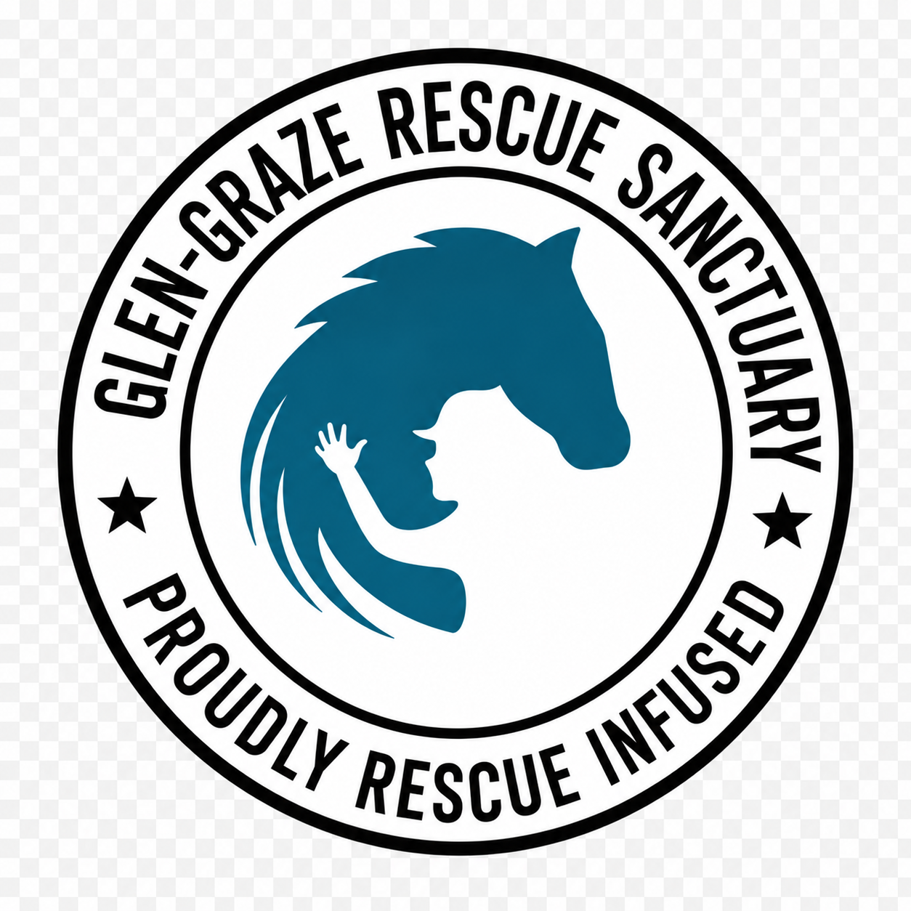
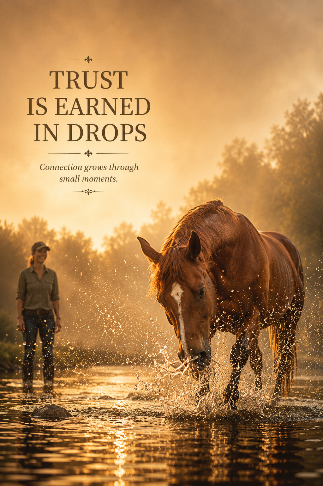
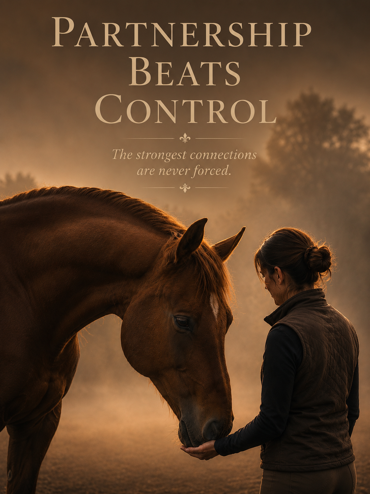

Care - Coaching - Confidence
Trusted support for families, pets, riders, and homes.
Canter & Co is a warm, reliable service provider in Somerset West, caring for the things families value most: children, animals, homes, confidence, and calm.
A calm extra pair of hands
Premium support with a personal touch.
From show preparation and schooling support to pet sitting, babysitting, tutoring, and home visits, Canter & Co brings steady care and practical help to busy families in the Somerset West, Stellenbosch, and Strand area.

In collaboration with Glen Graze Rescue Sanctuary Many lessons run from Glen Graze, supporting rescued horses with care and confidence.
About Chloe
Confident, capable, and naturally caring.
Chloe is in her final school year and has been involved with horses since she was born. She is an accomplished equestrian with a calm, confident way around horses, children, pets, and families.
A top ten student at Somerset College and a school prefect, Chloe is reliable, responsible, and warm. Her approach is practical and trustworthy, with the kind of quiet confidence that helps both people and animals feel settled.
Accomplished equestrian
Top ten student
Somerset College prefect
Wonderful with children and animals
Contact Chloe
076 609 9533
chloe@canterandco.co.za
Services & pricing
Choose the care you need.
Clear, thoughtful support for horses, homes, pets, children, and families.
Wall art
Prints with warmth, courage, and quiet confidence.
Chloe also creates uplifting wall art for bedrooms, study spaces, stables, and family homes. Browse a small selection below, then visit the Etsy shop for the full collection.
Visit the Etsy Shop

FAQ
Good things to know before booking.
Where does Canter & Co work?
Canter & Co is based at Sitari Country Estate and serves Somerset West, Stellenbosch, and Strand by arrangement.
How do bookings work?
Complete the booking form with your preferred date, location, and service. Chloe will confirm availability and any details needed before the appointment is final.
Can I book more than one day?
Yes. Use the notes field to list multiple dates, recurring needs, or any special instructions for homes, pets, children, or horses.
Do you support private yards and family homes?
Yes. Please include the yard name, home area, access notes, and anything Chloe should know before arriving.
Book an appointment
Tell us what you need.
This public form sends Chloe a booking enquiry only. Private calendar, client, and invoice details stay inside the Canter & Co planner.